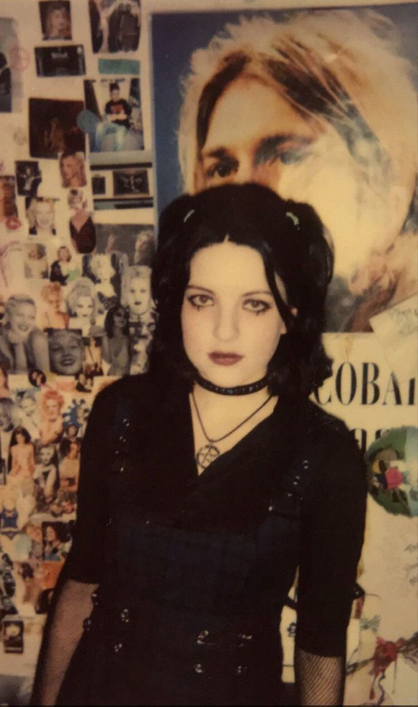

Samedi
après-midi.
L’air est tiède et
souffle comme une caresse douce sur tes bras nus.
La ville
transpire une lumière trop blanche, mais sous cette clarté
quelque chose palpite déjà : une attente, une promesse ou bien
une fuite possible.
 Tu as dans ton sac un carnet, quelques
pièces, et un goût persistant de métal et de sucre dans la
bouche.
Tu as dans ton sac un carnet, quelques
pièces, et un goût persistant de métal et de sucre dans la
bouche.
Tes
amies ne sont jamais tout à fait en retard : elles
arrivent toujours au moment exact où l’ennui devient
dangereux.
Devant toi, la ville s’ouvre comme un jeu de cartes
mal battu.
Tu sais que quoi que tu choisisses, tu feras tapis à
chaque fois dans ta quête d'intensité.
Pas aujourd’hui
peut-être, mais plus tard, quand tu chercheras à
comprendre
d’où vient cette étreinte qui te serre la
poitrine.
 Si tu
prends la direction de Cellules Grises
Si tu
prends la direction de Cellules Grises
(pour
acheter un livre fantastique, une figurine de dragon ou de
fée)
Tourne à la page 7.

Tu
y trouveras l’odeur des
reliures anciennes et de la poussière,
les couvertures trop
brillantes en papier glacé, des vampires des sorcières et des
dragons qui t'observent sans vergogne depuis leur royaume, et le
premier objet-totem
que tu garderas longtemps sans savoir
pourquoi.
Si
tu descends vers Anaconda, rue de la Cloche
d’Or (juste pour regarder, surtout ne rien acheter), tourne à
la page 13.

Les bijoux en ambre et en pierre de lune te regardent autant que tu les regardes. Nimbée dans un nuage d'encens indien, tu apprendras ce jour-là que certains désirs n’ont pas besoin d’être comblés pour laisser une trace.
Si
tu
préfères t’arrêter chez Madison Nuggets (pour écouter des
CD, échanger des mixtapes, parler trop fort), tourne à la page
21.

La
musique te traversera le corps
comme une révélation
discrète. Ils repassent Knockin' on heaven's door des Guns' n'
Roses, c'est peut-être car Vincent, le beau guitariste à la voix
grave du lycée, y travaille tous les weekends. Une chanson
deviendra une chambre secrète où tu reviendras te cacher pendant
des années.
Si
tu oses monter l’escalier hélicoïdal menant au
Centre du Verseau
(la librairie ésotérique dissimulée dans
l’immeuble ancien), tourne à la page 33.

Ici
commence
l’initiation. Les livres ne sont pas alignés par hasard.
Les
mots magie noire, dragon rouge et "Ananké"* se déposent en
toi sans demander la permission. Si tu décides de ne pas
choisir tout de suite (et de rester dehors, à regarder passer les
gens)Tourne à la page 5. Parfois, la vraie porte s’ouvre
quand on accepte de rester immobile.
Note au lecteur
/ à la lectrice
Tu peux suivre les pages, tricher, revenir en
arrière. Ce livre n’est pas là pour te guider... Il est là pour
te laisser errer.